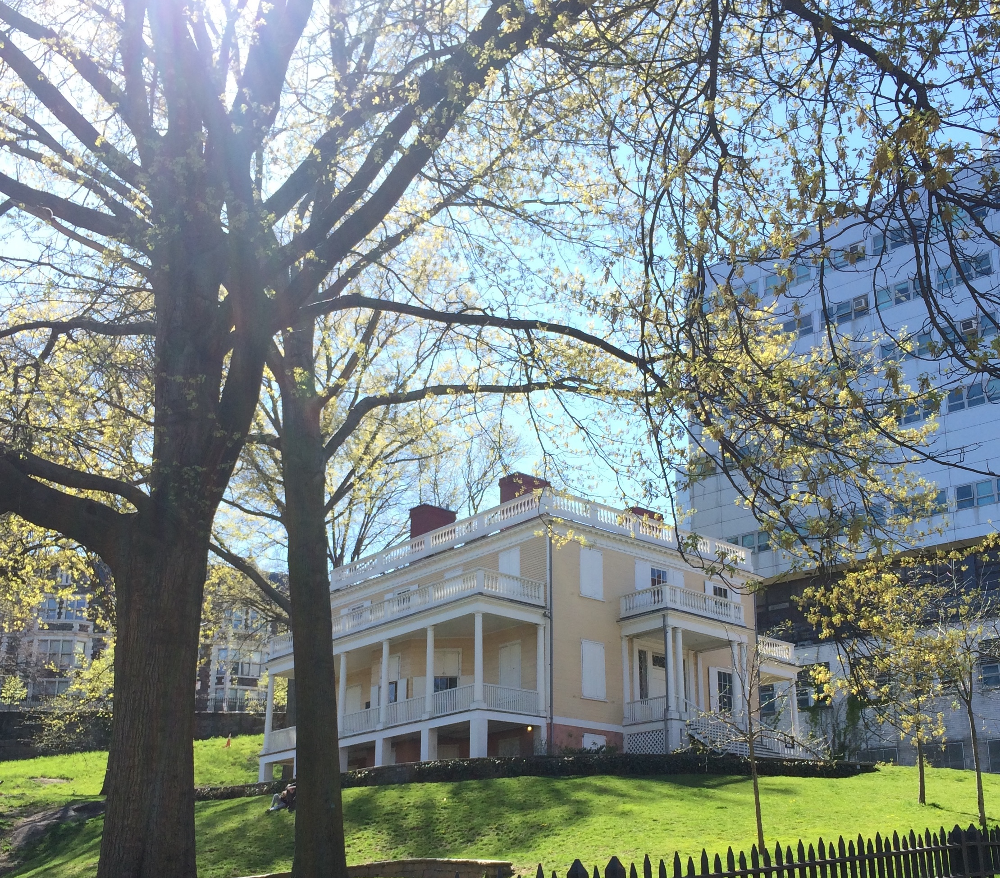
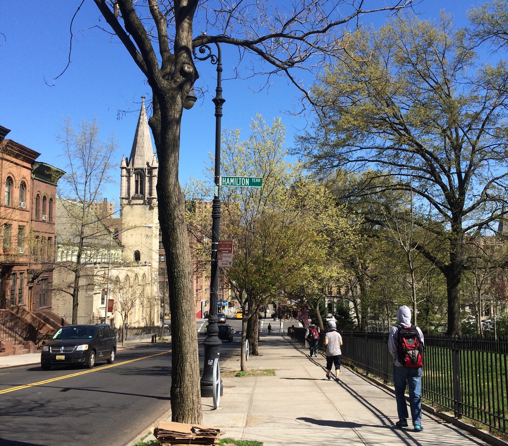

I live in the heart of the city, Manhattan. It is my favorite borough not only because I live in it, but because of how busy the streets are. Although I despise the frequent sirens that ring in my ears and the tourists taking up much of the space on the sidewalk, I like being in the crowd and being surrounded by skyscrapers. I love walking down Fifth Avenue especially. There is a myriad of aesthetic stores that are of worth taking pictures. I also love Soho with the cobblestoned streets. And of course, I love shopping.
I live in the heart of the city, Manhattan. It is my favorite borough not only because I live in it, but because of how busy the streets are. Although I despise the frequent sirens that ring in my ears and the tourists taking up much of the space on the sidewalk, I like being in the crowd and being surrounded by skyscrapers. I love walking down Fifth Avenue especially. There is a myriad of aesthetic stores that are of worth taking pictures. I also love Soho with the cobblestoned streets. And of course, I love shopping.
Another neighborhood I enjoy walking around is Hamilton Heights. It is a little quieter uptown, and the Hamilton Grange is located there. As a big fan of the musical Hamilton, visiting the relocated home of the Founding Father Alexander Hamilton is an exciting experience.
 Although winter in New York is extremely cold and seems to last forever every time, tourists are abundant in this season. Over a million people visit Times Square for the balldrop at the end of every year regardless of the weather. Since I live in the area, I usually stop by to count down to the new year.
Although winter in New York is extremely cold and seems to last forever every time, tourists are abundant in this season. Over a million people visit Times Square for the balldrop at the end of every year regardless of the weather. Since I live in the area, I usually stop by to count down to the new year.